Pinning tool V1.0 outside the sensor
1. Prepare images, point cloud data and calibration files
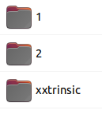 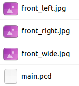 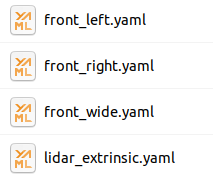
2. Run Calib_lidar2Camera
export LD_Library_Path =/Home/Fih1szh/Music/Manual_adjust_Lidar_Extrinsic/Manual_adjust_Extrinsic_20230220/lib (need to be imported when used for the first time).
Sudo Chmod A+X Calib_lidar2camera (required executable permissions when first use)
./calib_lidar2camera
3. Select the calibration file and data in turn, Check the content selected in the terminal
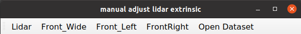
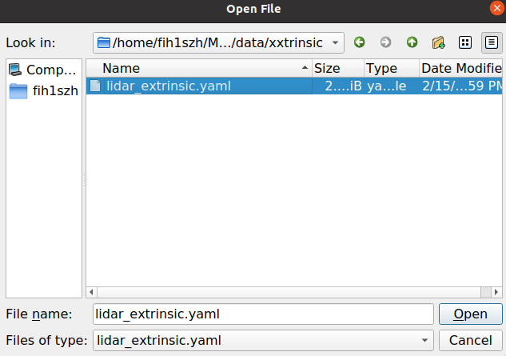 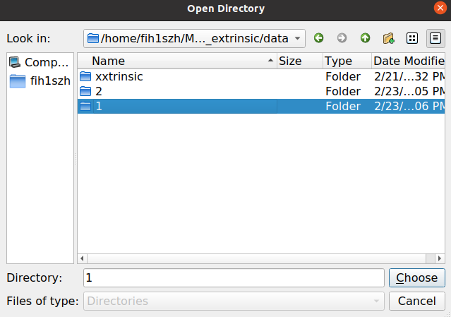
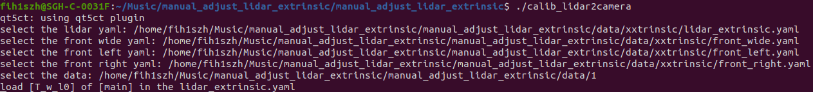
4. The amount of rotation of the rotation through the keyboard direction key (don't be too fast, the card)
Project the point cloud to the image Lidar -> Camera (at the same time project the front laser to the front -view wide -angle, Zhou Shi Qian, and Zhou Shi right front camera. Please observe the same time during the adjustment process.)
Use images to color the color Camera -> lidar (to ensure that the interface is not stuck, it is temporarily closed, you can choose to open it)
Close MainWindow, you can choose the next data set
Re -adjusted based on the original calibration results, not the last time it is adjusted
If you update the calibration file of LIDAR, run the next scene, you can adjust it on this basis
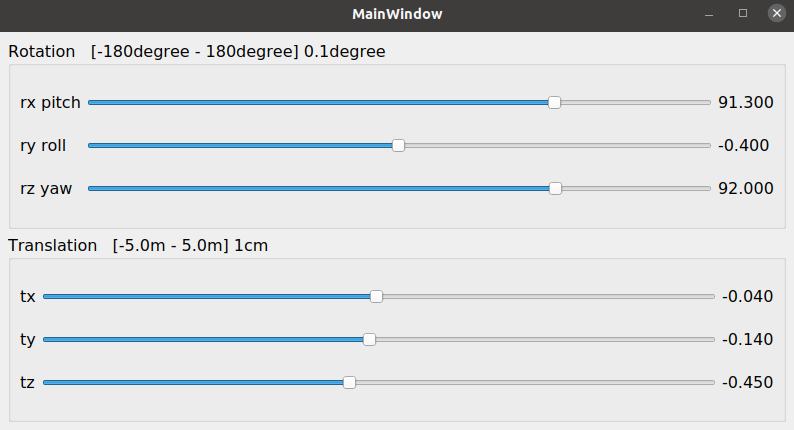 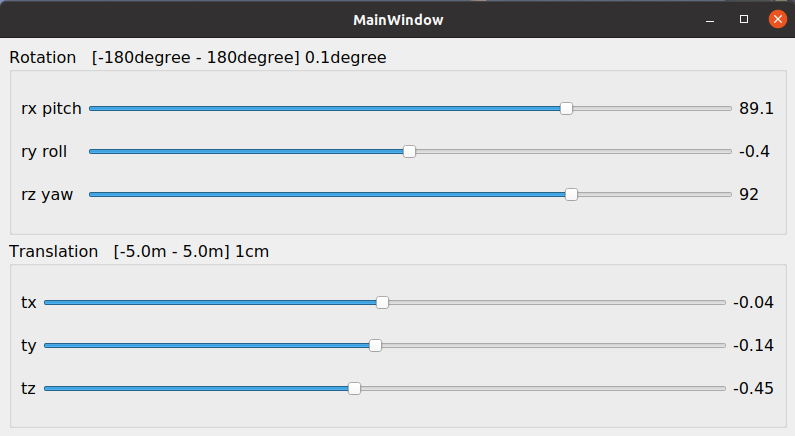 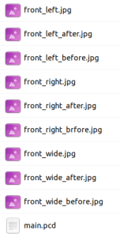
Note: If the initial position is located at the left and right end points of the progress bar, it exceeds the scope of adjustment, please contact LI Han (XC-AS/PJ-WIN-PER3)
As shown below before and after adjustment, the initial and final projection maps will be saved to the folder where the original data is located
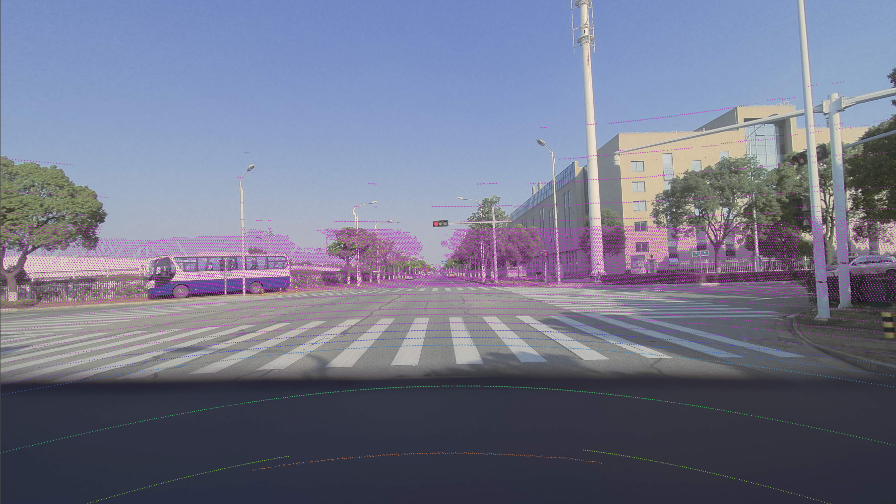 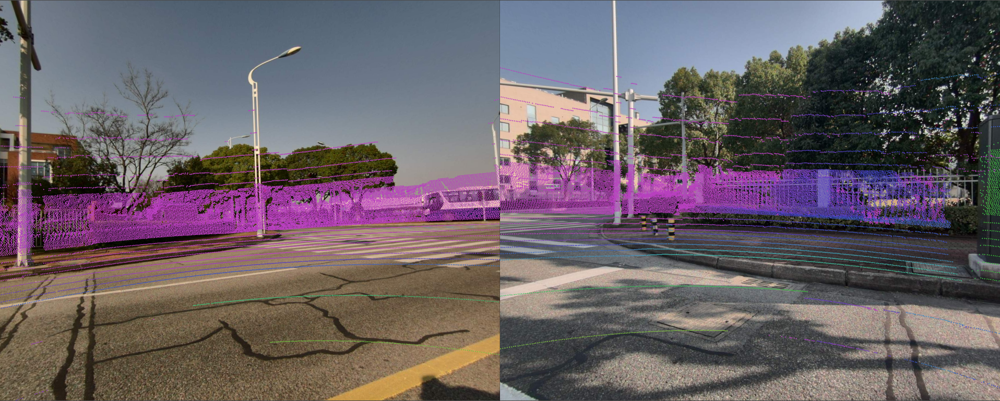
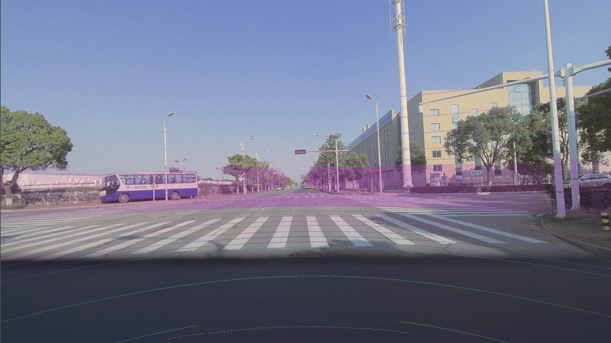 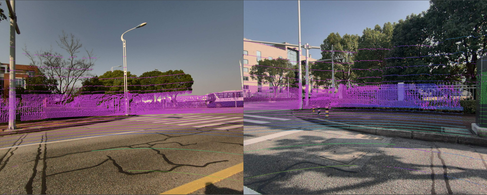
5. Replace the original results, Use the "projection tool" to re -check the final output result
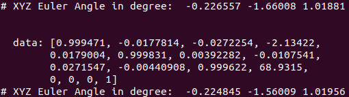 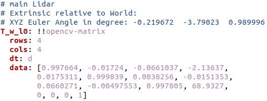